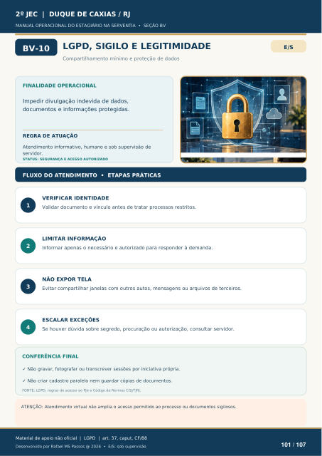

LGPD, SIGILO E LEGITIMIDADE
Compartilhamento mínimo e proteção de dados
FINALIDADE OPERACIONAL
Impedir divulgação indevida de dados, documentos e informações protegidas.
REGRA DE ATUAÇÃO
Atendimento informativo, humano e sob supervisão de servidor.
STATUS: SEGURANÇA E ACESSO AUTORIZADO
FLUXO DO ATENDIMENTO • ETAPAS PRÁTICAS
VERIFICAR IDENTIDADE
Validar documento e vínculo antes de tratar processos restritos.
LIMITAR INFORMAÇÃO
Informar apenas o necessário e autorizado para responder à demanda.
NÃO EXPOR TELA
Evitar compartilhar janelas com outros autos, mensagens ou arquivos de terceiros.
ESCALAR EXCEÇÕES
Se houver dúvida sobre segredo, procuração ou autorização, consultar servidor.
CONFERÊNCIA FINAL
Não gravar, fotografar ou transcrever sessões por iniciativa própria.
Não criar cadastro paralelo nem guardar cópias de documentos.
FONTE: LGPD, regras de acesso ao PJe e Código de Normas CGJ/TJRJ.
ATENÇÃO: Atendimento virtual não amplia o acesso permitido ao processo ou documentos sigilosos.
Ver também o infográfico original (página 101)
